Visualizations in ALASCA
We have aimed to implement a range of plotting options for ALASCA. In general, the plotting function is
plot(<object>, component = <component>, effect = <effect>, type = <type>, ...)where <object> is your ALASCA model,
<component> and <effect> the
components and effects of interest, and <type> the
plot type.
ALASCA can save the plots directly if you specify
save = TRUE when you initialize the ALASCA model.
Otherwise, the plots are returned as ordinary ggplot2
objects and can be saved with ggsave().
Note that you can specify properties of the plot during plotting,
e.g. specifying palette:
plot(res, component = 1, effect = 1, type = 'effect', palette = c("red", "blue"))
#> INFO [2026-01-12 10:42:20] Effect plot. Selected effect (nr 1): `time+time:group+group`. Component: 1.
The effect plot
The effect plot is the default plot showing both scores and loadings for the selected components/effects. You can select one effect and one component:
plot(res, component = 1, effect = 1, type = 'effect')
#> INFO [2026-01-12 10:42:22] Effect plot. Selected effect (nr 1): `time+time:group+group`. Component: 1.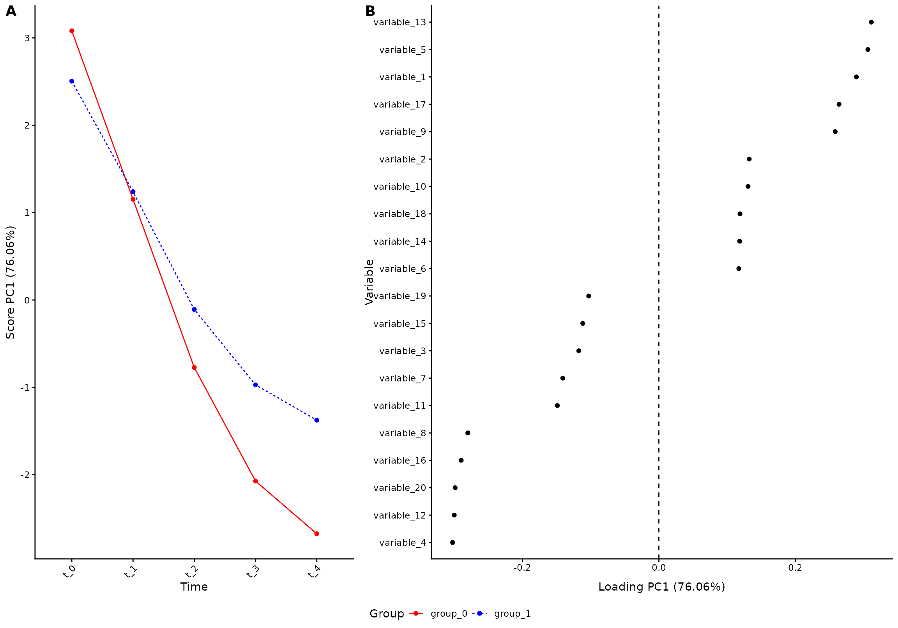
Or two components:
plot(res, component = c(1, 2), effect = 1, type = 'effect')
#> INFO [2026-01-12 10:42:23] Effect plot. Selected effect (nr 1): `time+time:group+group`. Component: 1 and 2.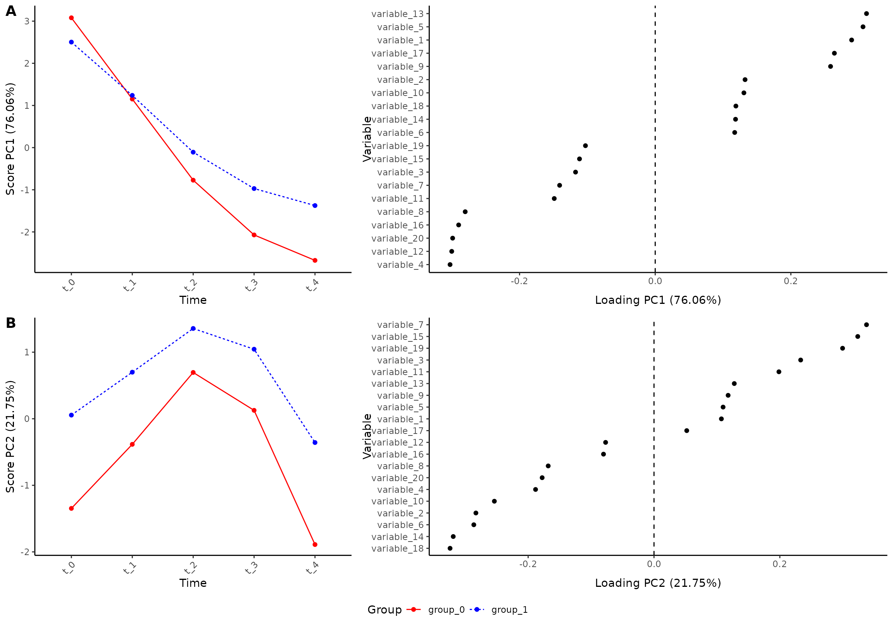
Or two effects (note: this requires a model with multiple effects):
plot(res_2, component = 1, effect = c(1, 2), type = 'effect')
#> INFO [2026-01-12 10:42:25] Effect plot. Selected effect (nr 1 and 2): `time` and `time:group+group`. Component: 1.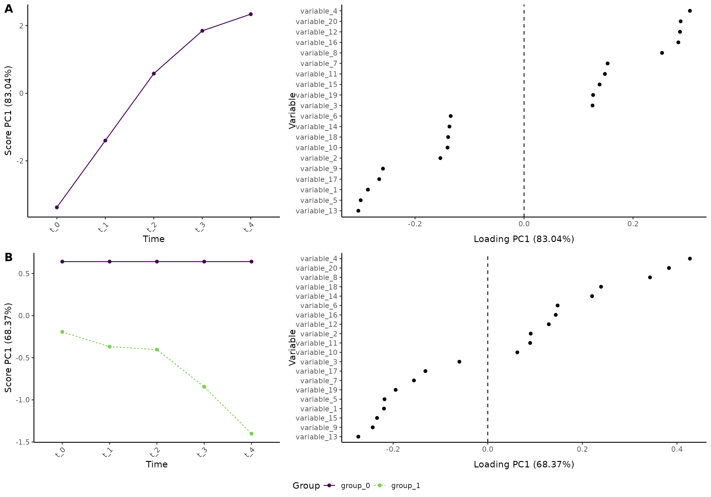
Or even a combination of multiple components and effects:
plot(res_2, component = c(1,2), effect = c(1, 2), type = 'effect')
#> INFO [2026-01-12 10:42:27] Effect plot. Selected effect (nr 1 and 2): `time` and `time:group+group`. Component: 1 and 2.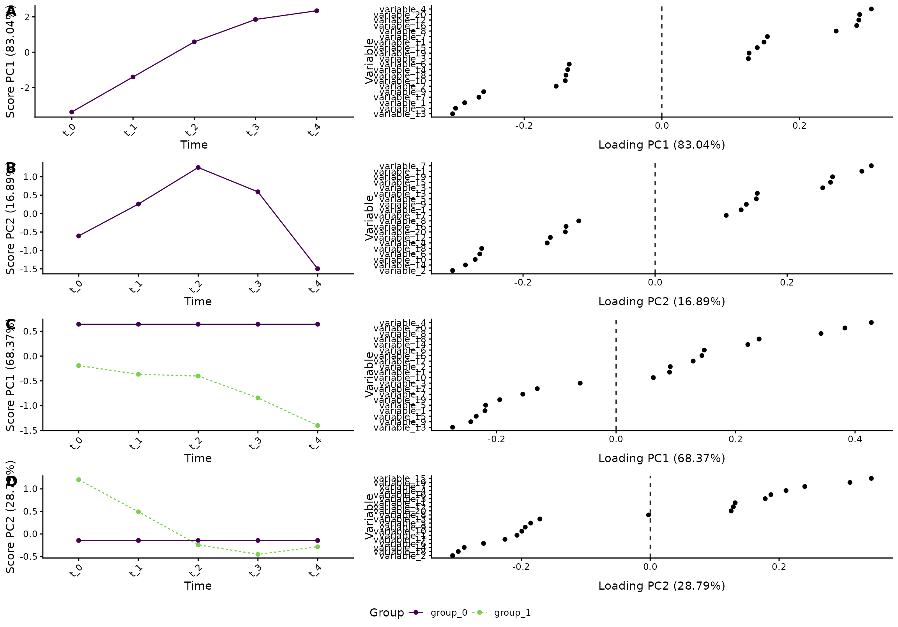
Plotting scores or loadings
The effect plot consists of two parts: scores and loadings. You can get those components directly:
plot(res, component = 1, effect = 1, type = 'score')
#> INFO [2026-01-12 10:42:30] Score plot. Selected effect (nr 1): `time+time:group+group`. Component: 1.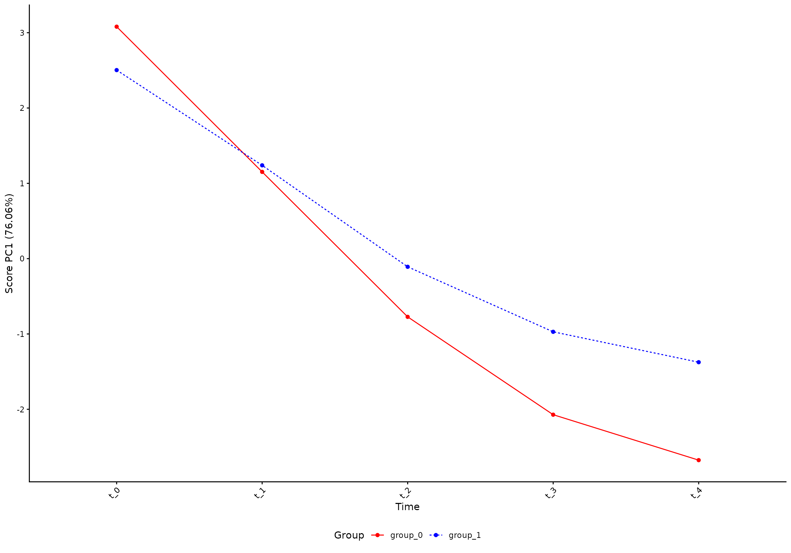
And similarly for loadings:
plot(res, component = 1, effect = 1, type = 'loading')
#> INFO [2026-01-12 10:42:30] Loading plot. Selected effect (nr 1): `time+time:group+group`. Component: 1.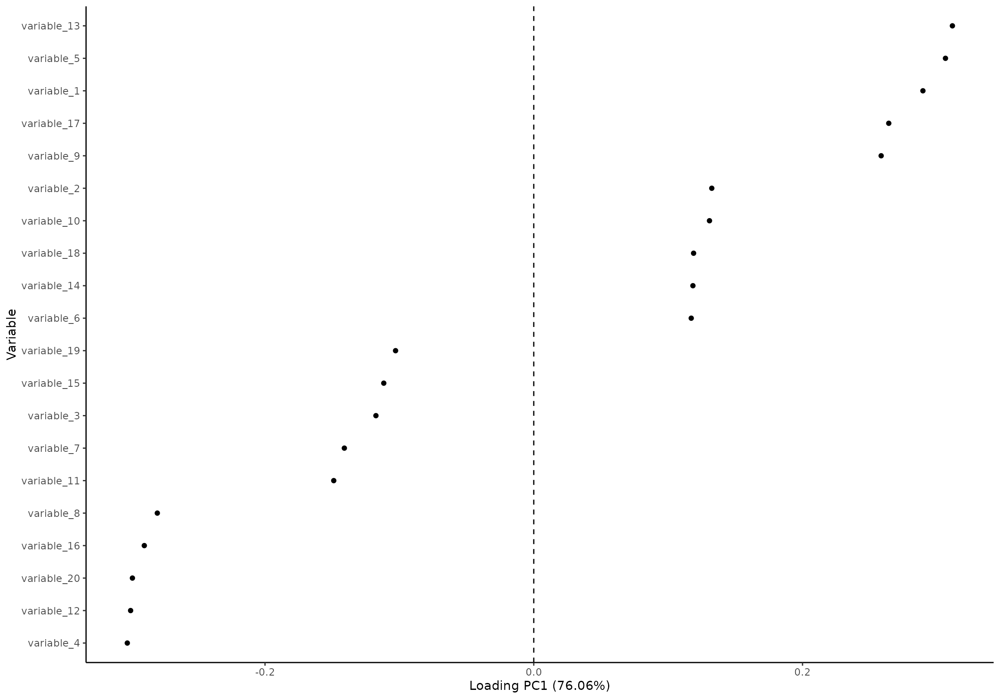
Grayscale
Some journals require plots in grayscale (or require fees for colors). You can therefore ask for grayscale figures in ALASCA:
res_3 <- ALASCA(
df,
value ~ time*group + (1|id),
plot.grayscale = TRUE
)
#> INFO [2026-01-12 10:42:31] Initializing ALASCA (v1.0.18, 2026-01-11)
#> WARN [2026-01-12 10:42:31] Guessing effects: `time+time:group+group`
#> INFO [2026-01-12 10:42:31] Will use linear mixed models!
#> INFO [2026-01-12 10:42:31] Will use Rfast!
#> WARN [2026-01-12 10:42:31] The `group` column is used for stratification
#> WARN [2026-01-12 10:42:31] Converting `character` columns to factors
#> INFO [2026-01-12 10:42:31] Scaling data with sdall ...
#> INFO [2026-01-12 10:42:31] Calculating LMM coefficients
#> INFO [2026-01-12 10:42:31] ==== ALASCA has finished ====
#> INFO [2026-01-12 10:42:31] To visualize the model, try `plot(<object>, effect = 1, component = 1, type = 'effect')`
plot(res_3, component = 1, effect = 1, type = 'effect')
#> INFO [2026-01-12 10:42:31] Effect plot. Selected effect (nr 1): `time+time:group+group`. Component: 1.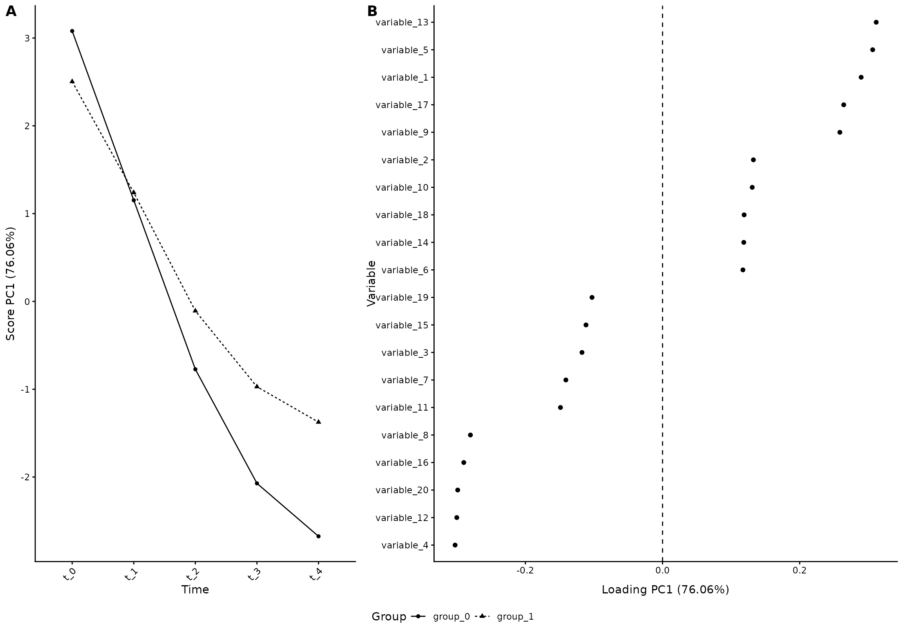
Adapting the theme
You can specify theme etc. of the plots when you initialize the ALASCA model:
res_4 <- ALASCA(
df,
value ~ time*group + (1|id),
plot.my_theme = theme_linedraw(),
plot.palette = c("red", "blue")
)
#> INFO [2026-01-12 10:42:32] Initializing ALASCA (v1.0.18, 2026-01-11)
#> WARN [2026-01-12 10:42:32] Guessing effects: `time+time:group+group`
#> INFO [2026-01-12 10:42:32] Will use linear mixed models!
#> INFO [2026-01-12 10:42:32] Will use Rfast!
#> WARN [2026-01-12 10:42:32] The `group` column is used for stratification
#> WARN [2026-01-12 10:42:32] Converting `character` columns to factors
#> INFO [2026-01-12 10:42:32] Scaling data with sdall ...
#> INFO [2026-01-12 10:42:32] Calculating LMM coefficients
#> INFO [2026-01-12 10:42:32] ==== ALASCA has finished ====
#> INFO [2026-01-12 10:42:32] To visualize the model, try `plot(<object>, effect = 1, component = 1, type = 'effect')`
plot(res_4, component = 1, effect = 1, type = 'effect')
#> INFO [2026-01-12 10:42:32] Effect plot. Selected effect (nr 1): `time+time:group+group`. Component: 1.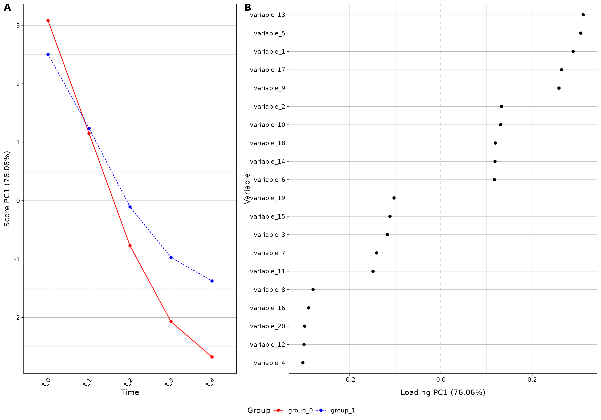
The color palette is by default made from the viridis palette, ending
at 0.8: scales::viridis_pal(end = 0.8)(2). You can of
course use the colors you want;
res_5 <- ALASCA(
df,
value ~ time*group + (1|id),
plot.my_theme = theme_light(),
validate = TRUE,
n_validation_runs = 10,
plot.palette = scales::brewer_pal(type = "qual")(2)
)
plot(res_5, component = 1, effect = 1, type = 'effect')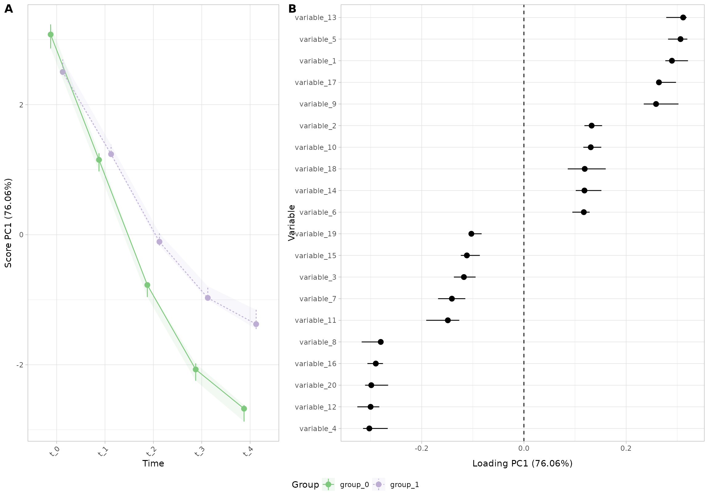
To remove the ribbon, you can set
plot.ribbon = FALSE:
res_5 <- ALASCA(
df,
value ~ time*group + (1|id),
plot.my_theme = theme_light(),
validate = TRUE,
n_validation_runs = 10,
plot.palette = scales::brewer_pal(type = "qual")(2),
plot.ribbon = FALSE
)
#> INFO [2026-01-12 10:42:36] Initializing ALASCA (v1.0.18, 2026-01-11)
#> WARN [2026-01-12 10:42:36] Guessing effects: `time+time:group+group`
#> INFO [2026-01-12 10:42:36] Will use linear mixed models!
#> INFO [2026-01-12 10:42:36] Will use Rfast!
#> WARN [2026-01-12 10:42:36] The `group` column is used for stratification
#> WARN [2026-01-12 10:42:36] Converting `character` columns to factors
#> INFO [2026-01-12 10:42:36] Scaling data with sdall ...
#> INFO [2026-01-12 10:42:36] Calculating LMM coefficients
#> INFO [2026-01-12 10:42:36] Starting validation: bootstrap
#> INFO [2026-01-12 10:42:36] - Run 1 of 10
#> INFO [2026-01-12 10:42:36] --- Used 0.08 seconds. Est. time remaining: 0.74 seconds
#> INFO [2026-01-12 10:42:36] - Run 2 of 10
#> INFO [2026-01-12 10:42:36] --- Used 0.08 seconds. Est. time remaining: 0.63 seconds
#> INFO [2026-01-12 10:42:36] - Run 3 of 10
#> INFO [2026-01-12 10:42:36] --- Used 0.08 seconds. Est. time remaining: 0.56 seconds
#> INFO [2026-01-12 10:42:36] - Run 4 of 10
#> INFO [2026-01-12 10:42:36] --- Used 0.08 seconds. Est. time remaining: 0.49 seconds
#> INFO [2026-01-12 10:42:36] - Run 5 of 10
#> INFO [2026-01-12 10:42:37] --- Used 0.23 seconds. Est. time remaining: 0.56 seconds
#> INFO [2026-01-12 10:42:37] - Run 6 of 10
#> INFO [2026-01-12 10:42:37] --- Used 0.06 seconds. Est. time remaining: 0.41 seconds
#> INFO [2026-01-12 10:42:37] - Run 7 of 10
#> INFO [2026-01-12 10:42:37] --- Used 0.09 seconds. Est. time remaining: 0.3 seconds
#> INFO [2026-01-12 10:42:37] - Run 8 of 10
#> INFO [2026-01-12 10:42:37] --- Used 0.07 seconds. Est. time remaining: 0.2 seconds
#> INFO [2026-01-12 10:42:37] - Run 9 of 10
#> INFO [2026-01-12 10:42:37] --- Used 0.08 seconds. Est. time remaining: 0.1 seconds
#> INFO [2026-01-12 10:42:37] - Run 10 of 10
#> INFO [2026-01-12 10:42:37] --- Used 0.09 seconds. Est. time remaining: 0 seconds
#> INFO [2026-01-12 10:42:37] Calculating percentiles for score and loading
#> INFO [2026-01-12 10:42:37] ==== ALASCA has finished ====
#> INFO [2026-01-12 10:42:37] To visualize the model, try `plot(<object>, effect = 1, component = 1, type = 'effect')`
plot(res_5, component = 1, effect = 1, type = 'effect')
#> INFO [2026-01-12 10:42:37] Effect plot. Selected effect (nr 1): `time+time:group+group`. Component: 1.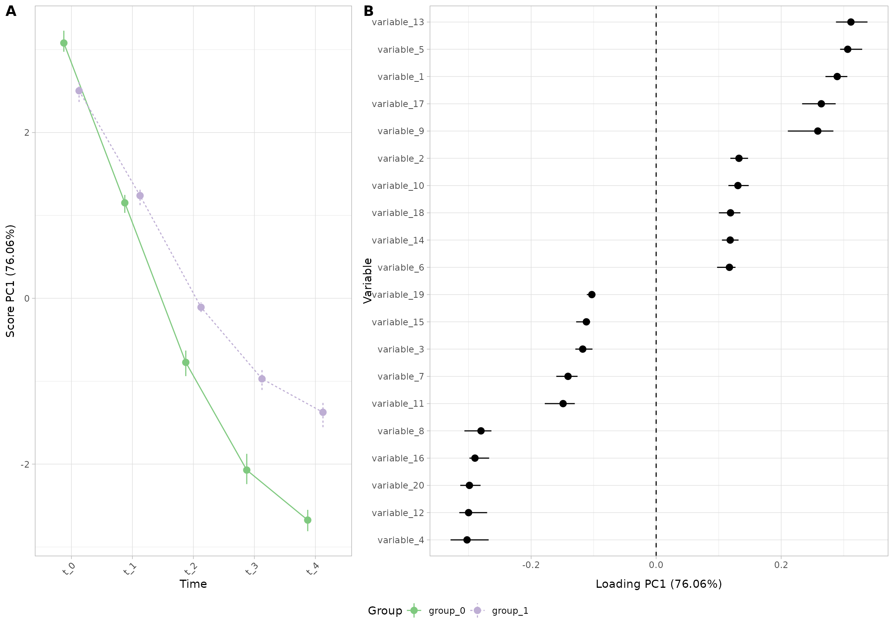
You can also change these properties directly in the
plot() function:
plot(res_5,
component = 1,
effect = 1,
type = 'effect',
ribbon = TRUE,
palette = scales::hue_pal()(2),
my_theme = theme_classic())
#> INFO [2026-01-12 10:42:38] Effect plot. Selected effect (nr 1): `time+time:group+group`. Component: 1.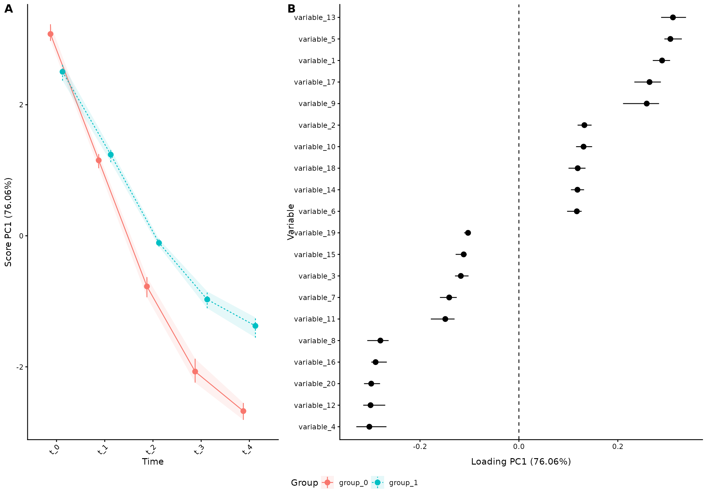
or (x_angle controls the rotation of the x axis labels,
and x_h_just is used to center them horizontally)
plot(res_5,
component = 1,
effect = 1,
type = 'effect',
grayscale = TRUE,
x_angle = 0, x_h_just= 0.5
)
#> INFO [2026-01-12 10:42:39] Effect plot. Selected effect (nr 1): `time+time:group+group`. Component: 1.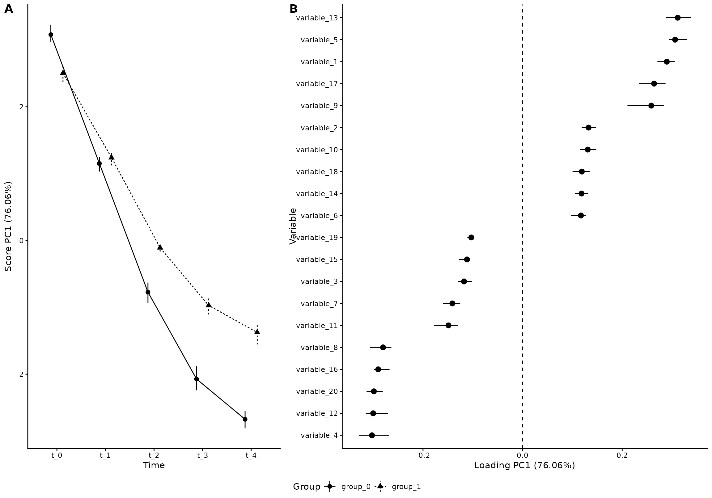
Some even prefer to have loadings along the x axis:
plot(res_5,
component = 1,
effect = 1,
type = 'effect',
x_angle = 90, x_h_just = 1, x_v_just = 0.5,
flip_axis= FALSE
)
#> INFO [2026-01-12 10:42:41] Effect plot. Selected effect (nr 1): `time+time:group+group`. Component: 1.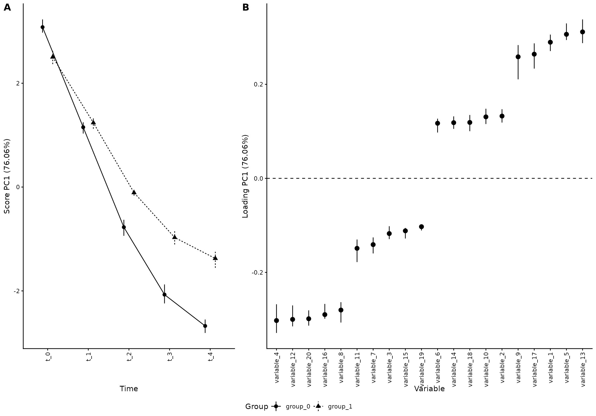
Screeplot
Note: The plotting function remembers previous choices, so if you plotted component 1 in the previous plot, you have to specify which components to plot:
plot(res, component = seq(1,10), effect = 1, type = 'scree')
#> INFO [2026-01-12 10:42:42] Scree plot. Selected effect (nr 1): `time+time:group+group`. Component: 1 and 2 and 3 and 4 and 5 and 6 and 7 and 8 and 9 and 10.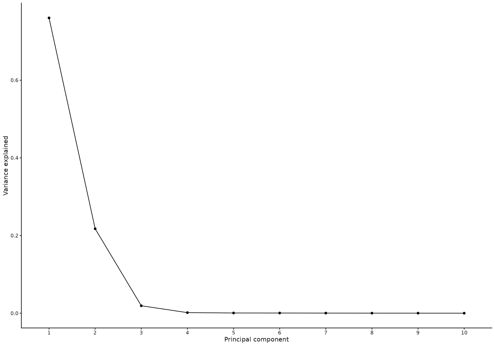
Predictions / Marginal means
By default, only some variables are selected based on their loadings:
plot(res, component = 1, effect = 1, type = 'prediction')
#> INFO [2026-01-12 10:42:42] Prediction plot. Selected effect (nr 1): `time+time:group+group`. Component: 1.
#> INFO [2026-01-12 10:42:42] Selecting the 0 variables with highest/lowest loading on `time+time:group+group` (PC1). Use `variable` to specify variables to plot
You can ask for specific variables:
plot(res, component = 1, effect = 1, type = 'prediction', variable = c("variable_8", "variable_13", "variable_15"))
#> INFO [2026-01-12 10:42:44] Prediction plot. Selected effect (nr 1): `time+time:group+group`. Component: 1.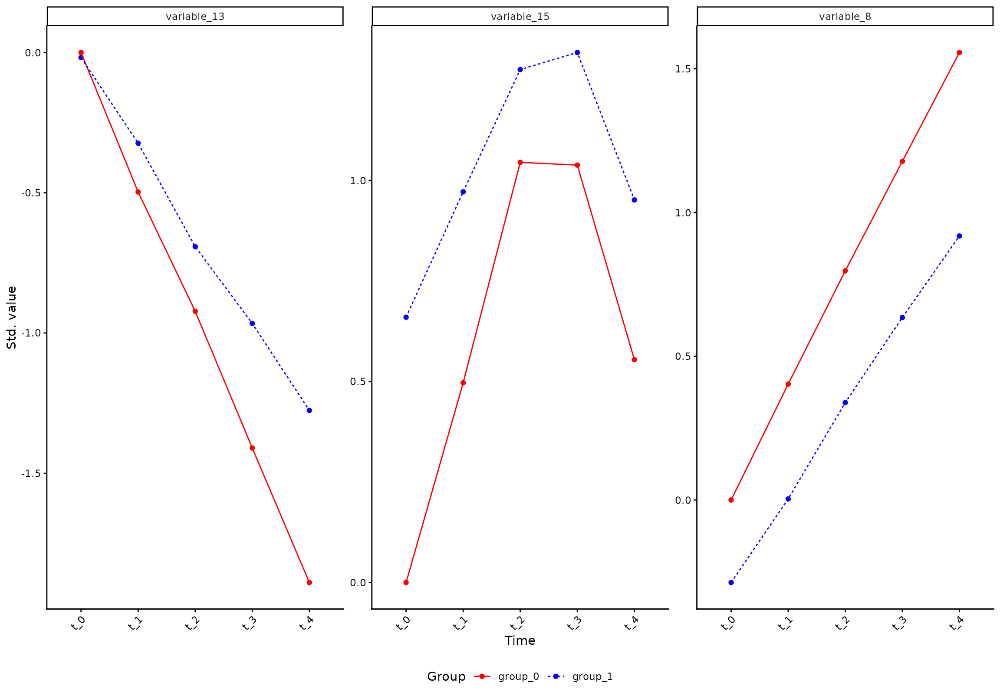
Or adjust the number of retrieved variables (note that we have to set
variable = c() for the plot function to forget the previous
setting):
plot(res, component = 1, effect = 1, type = 'prediction', n_limit = 4, variable = c())
#> INFO [2026-01-12 10:42:45] Prediction plot. Selected effect (nr 1): `time+time:group+group`. Component: 1.
#> INFO [2026-01-12 10:42:45] Selecting the 2 variables with highest/lowest loading on `time+time:group+group` (PC1). Use `variable` to specify variables to plot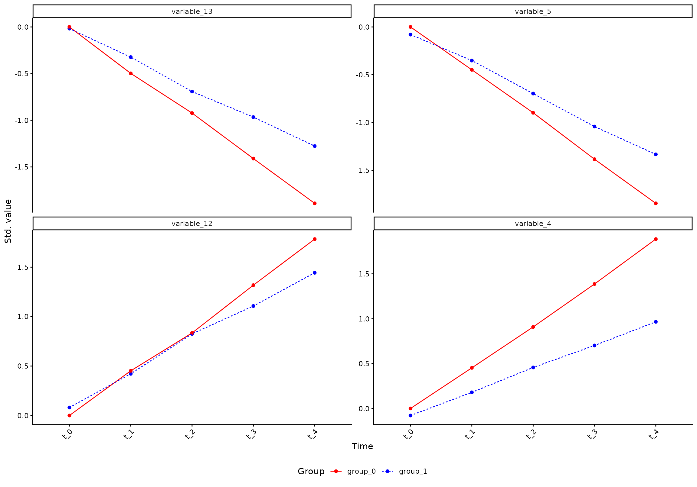